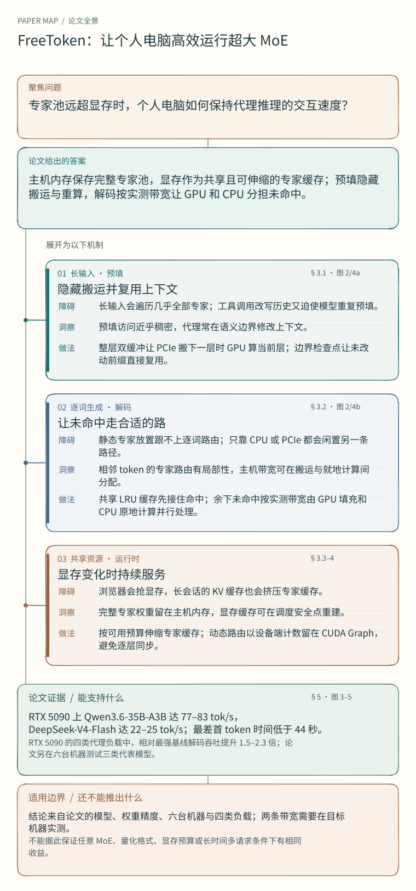

本机跑 284B MoE：FreeToken 怎样用「带宽比例」把闲置的 CPU 也算进来
FreeToken: Efficient Edge-Native MoE Serving with Bandwidth-Adaptive Execution
- 作者
- Shuo Yang、Xiaoze Fan、Melissa Pan、Haocheng Xi、Zhe Wang、Shanlin Sun、Kurt Keutzer、Song Han、Matei Zaharia、Chenfeng Xu†、Ion Stoica†（Shuo Yang 与 Xiaoze Fan 并列一作，†为共同指导）
- 版本
- arXiv:2608.16157v1 [cs.DC]，2026-08-17
- 阅读与项目
- HTML 全文 ｜ 摘要页 ｜ 代码：FlashML-org/FreeToken ｜ 项目页：flashml.ai
快速阅读
- 问题MoE 让每个 token 只算一小撮专家，但整池专家权重仍要放在主机内存里。预填会把几乎所有专家都走一遍，解码则不断遇到没命中的专家；桌面机、笔记本的 PCIe 和内存带宽比数据中心小一个量级，专家搬运和 CPU 侧执行都变成瓶颈。
- 做法FreeToken 把主机内存当权威副本、把显存剩余部分当成所有 MoE 层共享的一块弹性专家缓存，并用机器上实测的两个带宽（PCIe 实测搬运带宽 B_P、CPU 专家核实测带宽 B_H）推导出一个闭式比例 q*，把每步未命中专家按 q* 拆成「搬上显存」和「留在 CPU 就地算」两支并发执行（§3.2）。
- 关键证据RTX 5090 上 Qwen3.6-35B-A3B 维持 77–83 tok/s、DeepSeek-V4-Flash 22–25 tok/s，是各负载最强基线的 1.5–2.3 倍；最差一轮 TTFT 在所有负载都低于 44 s，而基线至少在某处越过 150 s（§5.2、Figure 3）。
- 边界主评只有 3 个模型、6 台机器，其中 3 台是限 6 线程的租用服务器；q* 需要部署时逐机实测带宽；专家池若不能 pin/DMA 就退回纯 CPU MoE 后端；论文比的是每请求平均 decode 速率与平均 TTFT，不比墙钟总时长。

为什么需要它：本机跑大 MoE 卡在哪

一个 MoE 层有几百个专家，每个 token 只走其中几个。DeepSeek-V4-Flash 每条 token 只激活 284B 参数中的 13B，每层 256 个路由专家只用 6 个、共 43 层（§1）。于是「算」是够得着的，「搬」才是问题：整池专家远超显存，必须放主机内存或磁盘上按需进入执行路径。
论文把边端 MoE 服务的损耗归成三处（§2）：
- 预填把稀疏工作集打散。长 prompt 里几千个 token 的路由并集几乎覆盖整层专家，等于把稀疏变成稠密。论文给的量级是：FP4 的 DeepSeek-V4-Flash 一次预填要搬约 140 GB 专家权重，在 RTX 5090（PCIe 5.0 ×16，约 60 GB/s）上多花约 2 秒，4090/3090 级桌面（PCIe 4.0 ×16，约 25 GB/s）约 5 秒，笔记本常见的 ×8 链路 10 秒以上（§2.1）。
- 解码的每次未命中都要付钱。静态放置跟不上逐 token 变化的路由；预测和预取只能减少未命中，不能决定「躲不掉的未命中该怎么分工」。而消费级 CPU 是双通道内存：DDR4 峰值约 50 GB/s、DDR5 约 80–90 GB/s，对比单张 4090/5090 片上显存的 1–1.8 TB/s（§2.2）。
- 边端资源不专属。浏览器、游戏随时抢显存，专家的最优划分随机器变化，启动/退出又很频繁（§2.3）。
还有一条容易被忽略的成本：混合注意力模型里，循环层（例如 Qwen3.6-35B-A3B 的 gated DeltaNet）把整段前缀压成一个演化状态，不能部分复用；agent 每一轮都在删 thinking、替换旧工具输出，落在改动点之后的检查点全部作废，只能回退到改动前最后一个检查点，于是经常要重新预填数千 token（§2.1）。
一个贯穿例子：12 次路由里 4 次没命中

这是论文 Figure 2 图注给出的示意（属于论文图示，不是实跑数值）：某个 MoE 层一步里有 12 次路由访问，遵循时间局部性，其中 8 次命中显存中的共享 LRU 专家缓存，剩下 4 个唯一未命中（m = 4）。
旧方案在这个位置有两种典型反应。llama.cpp 在加载时按规则把专家静态分到设备上，路由无关，命中率低；KTransformers 在预填时更新一份「热」专家集合钉在显存、其余在 CPU 上算，但这份放置是预填时冻结的，之后路由漂移就不再跟随。两者都回答不了「这 4 个未命中该怎么分工」。
FreeToken 的回答分两步。第一步，缓存本身就是「模型刚刚要过谁」的镜像：命中刷新最近使用时间，填充引入新专家，淘汰最久没被需求的专家，显存内容持续跟随路由的工作集（§3.2）。第二步，剩下的 4 个未命中按 q* 切开。
Figure 2 里切成了 1 个走 PCIe 填充进缓存、3 个留在 CPU 就地执行，两支并发，GPU 与 CPU 各算一部分和再精确相加，不做算法近似。
注意 1:3 这个比例来自机器：它约等于 B_P / B_H ≈ 0.25，和论文 Table 1 里 4060 笔记本的 11.8 / 47.5 ≈ 0.25 同一量级；如果换成 5090 服务器（52.7 / 77.3 ≈ 0.68），同样的 m = 4 会算出 q* ≈ 3，也就是 3 个走 PCIe、1 个留给 CPU。
这一句是按论文公式和 Table 1 实测带宽做的推算，用于说明「同一套公式、不同机器给出不同分工」，不是论文给出的该图数值来源。
同样有 4 个未命中专家时，实测带宽改变了分工：
| 部署机器 | B_P / B_H | 约走 PCIe / CPU |
|---|---|---|
| RTX 4060 笔记本 | 11.8 / 47.5 ≈ 0.25 | 1 / 3 |
| RTX 5090 服务器 | 52.7 / 77.3 ≈ 0.68 | 3 / 1 |
按原论文公式 4 和 Table 1 的实测带宽推算，取 m = 4 并四舍五入；这是帮助理解策略的计算示例。
设计一：把未命中按实测带宽比例切开（q* 策略）
这是论文最核心的设计选择（§3.2，公式 1–4）。
设一步有 m 个唯一未命中专家，每个完整专家大小为 S 字节。FreeToken 把它们分成填充集 F（大小 q）与 CPU 执行集 C：走 PCIe 的专家进缓存槽、在 GPU 上算、并留下供后续复用；走 CPU 的专家直接从主机常驻池里算，不改变缓存驻留。
为什么两者会互相挤压？因为 PCIe 搬运和 CPU 执行读的是同一套主机内存子系统。当 PCIe 传输已经跑满，主机内存能额外提供的残余带宽就是：
于是两条分支各自的耗时可以写成：
![T_{\mathrm{fill}}(q) \approx \frac{q\cdot S}{B_P}]()
![T_{\mathrm{cpu}}(m-q) \approx \frac{(m-q)\cdot S}{B_H-B_P}]()
让两支同时结束（谁先结束谁就浪费了资源），得到 q / (m − q) ≈ B_P / (B_H − B_P)，整理后就是：
![q^* \approx \frac{m\cdot B_P}{B_H}]()
论文强调这个形式覆盖了整个硬件谱：当 B_H 逼近 B_P 时 q* 逼近 m，系统自动退化成纯按需填充缓存，不需要另一套策略分支。
工程上还会取整、并至少保留 1 个填充，让缓存始终在升温；执行顺序上先启动 CPU 分支，再做 GPU 未命中路径（缓存更新、批量拷贝 F、对集合 G = 命中集 ∪ F 做分组计算），层延迟就是两支中较慢的那支——正是公式在配平的量。
设计二：预填不按需取，改成整层双缓冲
第二个论文特有的选择是反直觉的：既然预填几乎要用到整层专家，就不要按需取。FreeToken 从全局 slot 池里划出两个整层缓冲，GPU 用其中一个算第 l 层时，专用传输流把第 l+1 层的完整专家集合搬进另一个，然后两个缓冲互换角色（§3.1，Figure 2）。
「整层加载」是关键：因为不等该层的路由结果就能开始搬，传输可以连续在后台跑，而不是层与层之间串行。它带来两个额外好处：预填缓冲与解码缓存共用同一 slot 池，没有独立的预填缓存、没有阶段切换，预填期间留下的条目直接给对延迟敏感的解码期做种子；当 slot 池空不出两个整层时，退回按需加载，而不是超额占用显存。
设计三：语义锚点，让循环层状态在上下文被改后仍然可用
第三个选择针对 agent 负载的形状（§3.1）。全注意力层的 KV 用 radix 前缀树管理（沿用已有服务系统做法）；循环层因为状态不可分割，只能靠检查点。FreeToken 维护一个小型语义感知状态缓存：检查点挂在前缀树的节点上，新请求从「编辑后仍然存活的最深检查点」恢复，只重新预填新后缀。检查点槽位按 LRU 回收，与 KV 池独立。
关键判断是：预算该花在哪些位置。论文选择花在语义锚点上，也就是标记 thinking 段、工具调用与工具输出、对话轮次的 special token 边界。
依据是三个 agent 框架的实际编辑行为：OpenClaw 除最新一轮外剥离 thinking 块，OpenCode 把超出近窗的工具输出替换成固定占位符，SWE-agent 只保留最后 n 条 observation。
这些编辑删除或替换的是整块被 special token 标记的内容，编辑点之前的精确前缀保持不变——把检查点放在这些边界上，远比放在任意位置更容易在截断后存活。
设计四：让这些决策留在 CUDA Graph 里
动态性本身就是工程难题：每步未命中的专家、取回个数、被淘汰的槽位都在变。如果让主机控制缓存，每个 MoE 层都会重新引入一次设备同步（§4.1）。FreeToken 的做法是把与路由相关的控制全部留在 GPU 上，把动态控制表达为「固定形状的工作缓冲 + 设备端有效计数」这类数据，从而塞进一张静态捕获的图里。
具体有三处值得记住：
- 每层一个 kernel 完成路由去重、与驻留表比对、按实测带宽推导取回数 q、选淘汰牺牲者，并把逻辑路由 ID 改写成物理 slot ID 或一个「交给 CPU」标记。
- 牺牲者选择避开经典 LRU 陷阱（每淘汰一个槽扫一遍全表）：单遍 kernel 一次取出 K 个最久未使用候选，未命中路径只消费前 q ≤ K 个，因此牺牲者发现恒为一遍，与实际未命中数无关。
- 因为所有 expert bank 共享同一套「逻辑专家 → slot」映射（§4.2），一张设备端源/目标索引表就能以单次固定形状 launch 驱动融合传输，用有效计数掩蔽空工作。CPU 分支（D2H 拷贝、host-function 提交节点、同步节点、H2D 回拷）与并发 GPU 路径被捕获进同一张 CUDA Graph，重放不需要逐 token 的 Python 调度；CPU worker 是绑核的常驻 C++ 线程池，用架构相关 SIMD 与 kernel 内反量化保持带宽受限。
底层还配了两件事（§4.2）：FTW 权重格式预先把权重按运行时 bank 布局合并，启动时跳过张量发现与重排，用并行 direct I/O 直接读入精确大小的 host bank，填充完成后才 pin；§3.3 则允许在任意 scheduler safe point 按修订后的显存预算重建 GPU 专家缓存，不重启引擎、不重载主机常驻池，并取消 GPU 预热（首个请求用冷缓存走普通解码路径自然热起来）。因为主机池始终是权威副本，显存只影响性能、不影响正确性。
实验怎么看：先把设置讲清楚
评测在 6 台独立显卡机器上做（§5.1、Table 1）。
其中 3090、4090、5090 三台是租用的双路服务器，CPU 远强于任何边端主机，所以论文把服务运行和带宽测量都限制在 6 个 CPU 线程并绑到 GPU 的 NUMA 节点，以模拟边缘主机；论文称封顶后服务器给出 56.7–77.3 GB/s 主机带宽，与两台真实边端机满线程的 53.8 / 47.5 GB/s 同量级。
表里所有带宽都按真实部署的张量形状实测，而非取自规格书。
| 机器 | GPU（显存） | PCIe | B_P (GB/s) | B_H (GB/s) | 主机内存 |
|---|---|---|---|---|---|
| 5090 服务器 | RTX 5090（32 GB） | 5.0 ×16 | 52.7 | 77.3 | DDR5 180 GiB |
| 4090 服务器 | RTX 4090（24 GB） | 4.0 ×16 | 25.1 | 63.2 | DDR4 240 GiB |
| 3090 服务器 | RTX 3090（24 GB） | 4.0 ×16 | 25.3 | 56.7 | DDR4 180 GiB |
| 5090 桌面 | RTX 5090（32 GB） | 5.0 ×16 | 49.0 | 53.8 | DDR5 192 GiB |
| 4060 笔记本 | RTX 4060 Laptop（8 GB） | 4.0 ×8 | 11.8 | 47.5 | LPDDR5 32 GiB |
| PRO 6000 | RTX PRO 6000（96 GB） | 5.0 ×16 | 51.5 | 178 | DDR5 512 GiB |
来源：§5.1、Table 1。B_P 是实测的主机到设备专家搬运带宽，B_H 是实测的 CPU 侧 MoE 专家核有效带宽。
模型：DeepSeek-V4-Flash（284B 总参 / 13B 激活，官方 checkpoint 的路由专家原生 MXFP4）、Qwen3.6-35B-A3B（BF16；8 GB 笔记本改用官方 NVFP4 版），跨硬件研究加入 GLM-5.2（753B 总参 / 40B 激活，NVFP4 路由专家，433 GB checkpoint）。
负载是四个真实 agent 场景：W1 AIME 数学推理（单轮纯 decode）、W2 OpenCode 驱动 SWE-bench 仓库 issue、W3 同一 issue 改由 Claude Code 走各引擎的 Anthropic 兼容端点（并发子 agent，会话涨到 56–65k token）、W4 OpenClaw 邮箱/日历 agent（13 个固定轮次，约 24.5k token 系统上下文地板，关闭其 120 s 空闲看门狗以便慢引擎仍可测量）。
基线是 llama.cpp、Ollama、KTransformers、MoE-Infinity，权重格式对齐（Qwen3.6 全用 BF16，DSV4-Flash 全用原生 MXFP4 块）。
指标是每请求平均 decode tok/s 与平均 TTFT；因为各引擎 agent 轨迹发散，论文明确不比较跨引擎墙钟总时长。
证据一：端到端吞吐稳定，尾延迟才是分水岭（Figure 3，§5.2）

设置：RTX 5090，四个负载 × 两个模型；Qwen3.6 用 6 线程、DSV4-Flash 用 8 线程。
- decode 吞吐：FreeToken 在 Qwen3.6 上维持 77–83 tok/s、在 DSV4-Flash 上 22–25 tok/s，分别是各负载最强基线的 1.8–2.3 倍与 1.5–1.9 倍。
- 稳定性：三个 agent 负载下速率保持在单轮 W1 的 12% 以内；而最受上下文影响的基线 KTransformers 在 DSV4-Flash 上到 W2 已经损失了 31% 的 W1 速率。论文据此提醒：单流 benchmark 会高估基线的 agent 负载表现。
- 可用性边界：六个多轮单元中，FreeToken 在五个取得最低平均 TTFT（Qwen3.6 × W3 输给 KTransformers 的 GPU-prefill 分支），W1 的短孤立 prompt 则偏向 llama.cpp。更关键的是尾部：FreeToken 最差一轮在所有单元都低于 44 s，而各基线至少在某处越过 150 s——llama.cpp 232 s、Ollama 179 s、KTransformers 946 s。论文指出这些停顿越过了真实客户端的放弃阈值（OpenClaw 的 120 s 空闲看门狗、Claude Code 约 10 分钟的默认请求超时），所以尾部 TTFT 是可用性边界，而不只是延迟统计量。
MoE-Infinity 只能服务 W1（8.8 tok/s）：其 per-expert prefill staging 上限使长 prompt 负载中止，自带服务器也不跨请求保留 KV。Ollama 与 MoE-Infinity 不支持 DSV4，图中以 × 标注。
证据二：把增益拆到机制上（Figure 4，§5.3）
流水线预填。在 RTX 5090、Qwen3.6-35B BF16 上，开启重叠后每个 8192-token 预填 chunk 用时 1.19–1.22 s。
这个数字正好等于以 52.7 GB/s 把 64.4 GB 专家池完整流式搬一遍的时间，也就是 PCIe 5.0 ×16 的实际上限，说明专家计算被完全隐藏在传输之后；吞吐在 16k tokens 时升到 6.7k tok/s。
关掉第二缓冲让传输与计算串行，4k tokens 时损失 19% 吞吐、8k 时 25%、16k 时 26%——惩罚随 prompt 变长而增大。
专家局部性。相同路由轨迹、相同缓存容量下重放三种放置策略。
在 RTX 5090 的服务容量下（Qwen3.6 专家池的 37%、DSV4-Flash 的 11%），FreeToken 全局 LRU 的 decode 期专家读取未命中率为 16% 与 39%；KTransformers 的 prefill 更新式放置为 41% 与 59%；llama.cpp 的路由无关静态切分为 62% 与 89%。
在未装满整个专家池的各容量点，排序一致。

证据三：跨硬件与前沿规模（Figure 5，§5.3）

在五台消费级机器上重复 W2（OpenCode + SWE，Qwen3.6）：FreeToken 相对各自最强基线的领先为 RTX 3090 / 4090 上 1.3 倍、5090 服务器 1.9 倍、5090 桌面 2.1 倍、RTX 4060 笔记本 1.8 倍。
笔记本 NVFP4 构建在 8 GB、PCIe ×8 上达到 39.3 tok/s，为论文所报 RTX 4090 速率的 92%。
两张 5090 列只差主机：从多通道服务器换到双通道消费桌面，FreeToken 只掉 4%，llama.cpp 只剩 80%——论文的解释是其 CPU 常驻专家在两条 DDR5 通道上挨饿，这正好呼应 §2.2 的带宽论证。
前沿规模：单张 RTX PRO 6000 上，FreeToken 以 14.9 tok/s 服务 GLM-5.2（753B-A40B，NVFP4），llama.cpp 为 7.3 tok/s（2.0 倍），两者专家权重逐位相同、平均 TTFT 相当（7.5 s 对 7.8 s）。
该机上 KTransformers 没有可服务路径：其 GLM-5.2 方案需要 753 GB–1.5 TB 常驻主机专家，而机器只有 512 GiB 主机内存，且其 CPU kernel 读不了 GLM-5.2 的 NVFP4 布局。
适用边界
论文验证过的范围：3 个主评模型（DSV4-Flash、Qwen3.6-35B-A3B、GLM-5.2）与 6 台机器；引擎对比集中在 RTX 5090（Figure 3），其余机器只在 W2 上复现（Figure 5）。论文自述覆盖 20+ MoE 模型、35B 到 753B，那是系统支持面，不是实测面。
作者承认或数据显示的限制：
- 6 台机器中 3 台是租用双路服务器并以 6 线程封顶来模拟边缘主机，跨硬件结论部分依赖这种模拟的有效性；真实笔记本与桌面各只有 1 台。
- 基线并非在所有配置可用：Ollama 与 MoE-Infinity 不支持 DSV4，MoE-Infinity 只跑 W1，KTransformers 在 PRO 6000 上无法服务 GLM-5.2，图中以 × 标注。
- FreeToken 并非每格全胜：W1 短 prompt 的平均 TTFT 输给 llama.cpp，Qwen3.6 × W3 的平均 TTFT 输给 KTransformers；MoE-Infinity 在 W1 上也给出了数值。
- q* 依赖部署时在目标机器上实测 B_H 与 B_P；推导假设两分支共享同一主机内存带宽、单个完整专家尺寸 S 一致。
- 快速路径要求专家池能被 pin 或注册 DMA，否则退回纯 CPU MoE 后端（非专家层仍在 GPU，只有激活尺寸输入、路由元数据与聚合输出跨 CPU–GPU 边界），以峰值传输带宽换取可部署性（§4.2）。
- 预填双缓冲要求 slot 池能空出两个整层，否则退回按需加载；语义锚点的收益依赖 agent 框架确实在 special-token 块边界做编辑（§3.1）。
- 指标是每请求平均 decode tok/s 与平均 TTFT，论文不比较墙钟总时长；启动时间、能耗与多用户并发不是本文的实验对象。
尚待验证的推断：论文用「q* 是闭式、够便宜因而能留在图内」来解释相对主机侧启发式的优势，但除 Figure 4 的放置策略对照与流水线开关消融外，没有给出把 q* 换成固定划分或主机侧调度的单独消融，因此 q* 相对其他并发划分策略的净收益幅度仍属间接证据。
Takeaway
- 边端 MoE 的瓶颈通常不是算力而是搬运与内存带宽。DeepSeek-V4-Flash 每 token 只激活 13B，但一次预填仍要流过约 140 GB 专家权重（§2.1）。
- FreeToken 的核心贡献不是又一个缓存策略，而是把「未命中专家怎么服务」变成一个由机器实测带宽决定的闭式比例：q* ≈ m · B_P / B_H，PCIe 填充与 CPU 就地执行并发进行，并把残余主机带宽转成当前 token 的进度（§3.2，公式 1–4）。
- 三个配套设计缺一不可：整层双缓冲让预填变成传输受限（8192-token chunk 1.19–1.22 s，正是 64.4 GB / 52.7 GB/s，§5.3、Figure 4a）；共享 LRU 专家缓存把 decode 未命中压到 16% / 39%，优于 41% / 59% 与 62% / 89%（§5.3、Figure 4b）；语义锚点让循环层状态在 agent 编辑上下文后仍可复用（§3.1）。
- 工程上真正的门槛是「动态决策能否留在 CUDA Graph 里」：单遍选出 K 个 LRU 候选、统一逻辑专家映射、固定形状 launch 加有效计数掩蔽，才避免了逐层主机同步（§4.1）。
- 使用条件要记清：先在这台机器上实测 B_P 与 B_H；专家池必须可 pin 或可注册 DMA；收益在长上下文、多轮 agent 负载上最大（速率保持在单轮 12% 以内，基线最差可掉 31%），而在单轮短 prompt 的 TTFT 上并不占优。
来源
- 论文全文：arXiv:2608.16157v1（2026-08-17），本文所有章节号、公式号、图表号与数值均出自该版本；摘要页：arxiv.org/abs/2608.16157。
- 系统与发布：github.com/FlashML-org/FreeToken、flashml.ai。
- 图表说明：文中嵌入原文 Figure 2 与 Figure 4 的 SVG 图像，并在邻近段落解读；其他图的结论标注图号并用文字重述数值，例如 Figure 4a 的 19% / 25% / 26%、Figure 4b 的 16% / 39% 与 41% / 59%、62% / 89%、Figure 5 的 14.9 对 7.3 tok/s；Table 1 原文即为文字表格，可直接对照。
- 文中所有「示意」数值（Figure 2 的 12 次路由、8 次命中、m = 4 的 1 + 3 拆分）来自该图图注本身；由 Table 1 带宽推算 q* 的那句已明确标注为推算，不是论文结果。